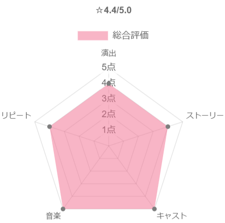
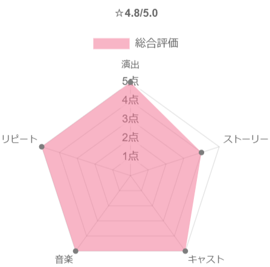
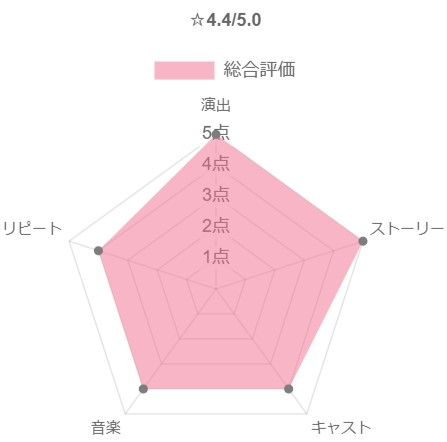
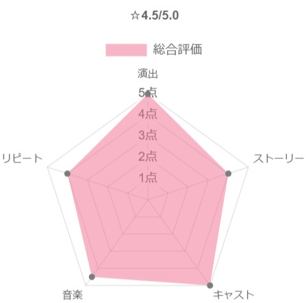

謎の死を遂げた父親の影を引きずり、天性の勘を頼りに戦闘機を操縦する青年Maverick。あることをきっかけにTOPGUNに送り込まれることに。訓練開始前のパーティで出会った女性に恋をするが、その相手は教官のCharlieであった。やがて2人はお互いの立場を超え恋に落ちる。ある日、訓練中に親友のGooseを亡くしまい、事故ではあったが同じ機体で操縦していたMaverickは大きな責任を感じる。かつて見せていた野性的で攻撃的だった操縦は失われてしまった。その後色々あり無事にTOPGUNを卒業するが、式後の謝恩会中に出撃命令が出され、いきなりの実戦となる。Gooseを亡くした恐怖や自責の念を抱えながらも、任務完了のために仲間と共に戦場に向かう。

35年ぶりのTOPGUNの続編である。米海軍史上最高のパイロットでありながら、無鉄砲な性格から一向に昇進せず現役であり続けるMaverick。ある日TOPGUN(米海軍エリート・パイロット養成学校)時のライバルであり現海軍トップのIcemanから、達成不可能なミッションに直面したTOP GUNの新世代パイロット達を指導するという特命を授かる。その中にはかつて同じ戦闘機での訓練飛行中に命を落とした相棒Gooseの息子Roosterの姿があった。ミッション達成のためにMaverickが用意した厳しい訓練は次第に生徒の反感を買い、Roosterからは「お前のせいで父親は死んだ」と糾弾される。「もう誰も死なせない」という強い決意を胸に秘め、若きTOPGUNと共に自らも空に命を懸ける。


科学的研究というのが近代史学の学問的方法による研究という意義であるならば、これは史学の学徒の間においては一般に行われていることであるから、今さらこと新しくいう。あああああああああああああああああああああああああああああああああああああああああああああああああああああああああああああああああああああああああああああああああああああああああああああああああああああああああああああああああああああああああああああああああああああああああああああああああああああああああああああああああああああああああああああああああああああああああああああああああああああああああああああああああ。あああああああああああああ

スラム街出身のアフリカ系青年Drissは、失業手当目当てで向かった先で素直な性格を買われ、大富豪の障害者Philippeの世話役として雇われることとなった。移乗動作、マッサージ、シャワー、挙句の果てには排泄まで手伝うことになり、不満をたれながらも毎日を過ごす。Drissが飛ばす冗談には一般的には差別ととらえられるような物もあるが、障がい者に気を変に気遣わずフラットに接するDrissの人柄に惹かれ、徐々に彼らの友情は生まれていく。障がい者と健常者、大富豪とスラム出身という様々な対比がありながらも、互いに不足している部分を補いあえるPhilippeとDrissだからこそ「最強のふたり」なのである。


1926年のアメリカでは差別が根強く残っていた時代、ニューヨークの一流ナイトクラブで用心棒を務めていたイタリア系男のTony Lip。改装工事をきっかけに短期間ながら失業してしまう。その後、Tonyは友人からの紹介で天才黒人ピアニストのDr.Shirleyが南部で行う演奏ツアーに運転手兼ボディガードとして雇われる。Tonyは家に来た黒人作業員が使った後のコップを捨てるほどの人間だったが、2人はグリーンブック(黒人が利用できる施設を記した旅行ガイドブック)を手に差別が残る南部に向かい、旅を通して深い友情で結ばれていく。ホワイトハウスで演奏するほどの実力者のShirleyがあえてアメリカの南部を選んだ理由とは？


科学的研究というのが近代史学の学問的方法による研究という意義であるならば、これは史学の学徒の間においては一般に行われていることであるから、今さらこと新しくいう。